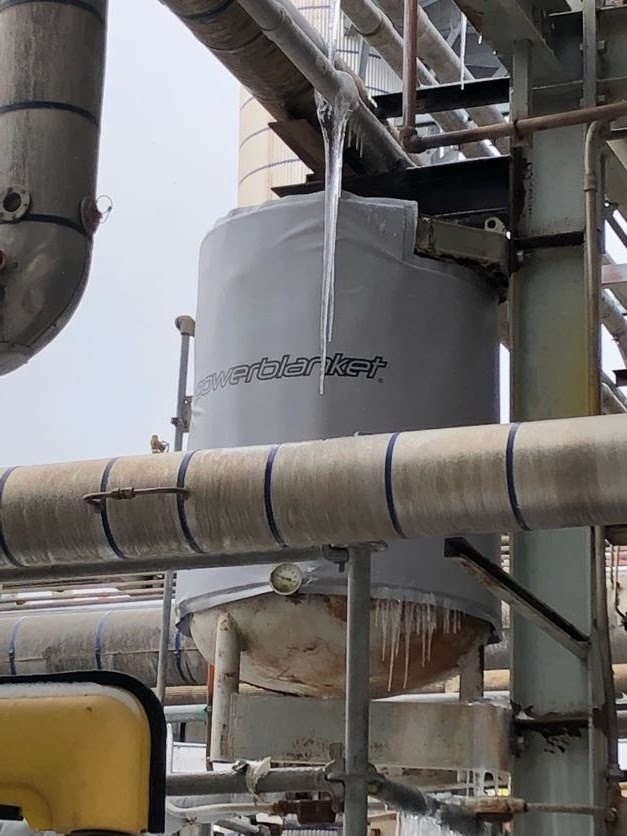
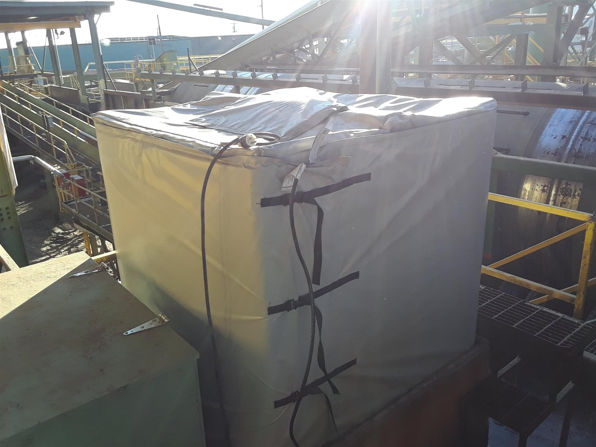

Keeping stored liquids, chemicals, and viscous materials at a workable temperature — from totes to process tanks — and how to choose the right method for your application.
Why It Matters
A tank that gets too cold stops being a tank and starts being a problem: contents freeze, viscosity climbs, pumps strain or fail, and product quality drifts outside spec. Whether the tank holds water, a process chemical, a lubricant, or a viscous raw material, the fix is the same discipline — get the right amount of heat to the right place, without damaging the tank, the contents, or anyone standing near it.
There's no single best way to heat every tank. The right method depends on the tank's size and material, what's inside it, how hot it needs to get, where it sits, and how the fluid moves through it.
How It Works
When we talk about tank heating, we generally mean large storage tanks — roughly 5 ft to 15 ft in diameter, and anywhere from 5 ft to 30 ft tall. Tanks are naturally suited to Powerblanket's approach: they usually have an as-built schematic that makes the design straightforward, and their large surface area plays to our core strength — rich power density spread over a large area instead of concentrated in one hot spot.
Rather than one blanket covering the whole tank, we heat it in horizontal rings — each blanket covers about 5 ft (60") of tank height. That zone approach lets the duty cycle of each ring follow the actual product level: turn off the upper rings as the fluid level drops, and focus all the heat on the wetted tank wall instead of wasting it on empty headspace above the fluid.
Because each blanket combines the heater, insulation, and means of attachment in one component, install is fast. A two-person team can typically fit the blankets, cinch them down with the supplied straps and buckles, and plug them in — no electrician required for an ordinary-location, plug-in design, and no separate insulation crew. Less time and fewer trades on an active job site means lower labor cost and less exposure to job-site risk.
A unique tank heater design typically takes as little as one business day to complete (longer during busier periods), and ships within 5 business days once finalized. If you have multiple identical tanks, only the first needs a full design and fit-check — repeat units ship on a much shorter lead time, which is useful for planning a multi-tank rollout.
Choosing a Method
Powerblanket, heat trace, pad heaters, steam trace, and immersion heaters all have a place. These are the factors that actually decide which one fits — not brand preference.
Tanks up to about 15 ft in diameter and 25 ft tall can be heated effectively from the outside. Larger than that, some form of immersion heater usually makes more sense.
Plastic tanks and other low-melting-point materials can be damaged by concentrated heat. An external blanket or heat-trace solution spreads power over a large surface area, so no single spot gets particularly hot.
Materials with a low flash point, or that degrade under concentrated heat, favor an external solution over an immersion heater — the temperature difference between the heating element and the contents stays small.
For freeze protection and maintenance heating up to roughly 200°F, an external blanket or heat trace is an excellent, proven choice. Above that, or if you're in a hurry, pad heaters, steam, or immersion heaters offer higher power density.
On a remote job site, an external blanket is typically faster, easier, and safer to install than heat trace — no skilled trade labor required, and nothing to weld or hard-pipe.
A tank with a high flowrate, where warm fluid is constantly being replaced by cold, may need the higher power density of steam or immersion heat. Talk to an engineer before assuming an external solution will keep up.
No flanges, or don't want to drain the tank to install or replace a heater? An external heating source avoids modifying the tank at all.
A Real Worked Example
One real reference case: a 14 ft diameter, 25 ft tall vertical tank on a concrete pad, insulated, needing to maintain 40°F through a -20°F ambient winter with 25 mph wind. Total installed cost, materials and labor included, compared across methods.
| Heating Method | Total Installed Cost |
|---|---|
| Powerblanket | $18,367.51 |
| Steam Tank Heating | $36,895.94 |
| Electric Heat Trace (Parallel) | $43,043.13 |
| Electric Heat Trace (Series) | $46,241.08 |
| Flanged Immersion Heater | $38,805.94 |
| Pad Heater | $66,952.77 |
Figures are a real reference comparison for the specific tank described above, including insulation cost and installation labor where applicable — not a quote for your application. Actual cost depends on your tank, location, and labor rates, and is confirmed during engineering review.
A Real Installation
One real example of the size/location/cost trade-off above, playing out on an actual job.
Case Study
Ovintiv needed to heat and insulate a tank of drilling lubricant in Northern Alberta through a severe, prolonged winter, with zero tolerance for an interruption to drilling operations. Two solutions were on the table: electric heat trace, priced around $25,000 in materials alone before labor and insulation (heat-tracing a skirted tank is difficult, and once insulated, is nearly impossible to inspect or remove), or a Powerblanket system, priced around $20,000 with faster delivery and far fewer install hours.
The entire tank was wrapped in heated blankets with an insulated-only top, plus a 5,000 W natural-gas Catadyne heater under the tank skirt as backup against a power outage. The heating jacket's design also made it easy to remove and reinstall for the company's planned tank relocation — something a heat-traced, insulated tank could not offer.
The Powerblanket solution was not only more affordable from the outset, but also promised faster delivery and fewer man-hours to install. From the Ovintiv case study, on the decision between heat trace and Powerblanket
Another Real Installation
Case Study
White's Equipment Rental uses secondary Catch Tanks to capture fluids containing water, soap, and drill cuttings on active well sites — if a tank freezes, it can stop flowing entirely or force fluid to pass through unfiltered, an environmental and financial risk. With 30 Catch Tanks in operation, the exposure was real: an estimated $12,750 per day in rental revenue tied up in the tanks, plus the cost of any pumps damaged by freezing. A custom heating blanket fitted precisely to the tanks eliminated the freeze risk and, with it, the downtime, environmental exposure, and lost revenue that came with it.
From the Field


Still Have Questions?
If you have additional questions after reading this guide, a real Powerblanket applications engineer will answer them personally — no pressure, no obligation.
Ask an Engineer